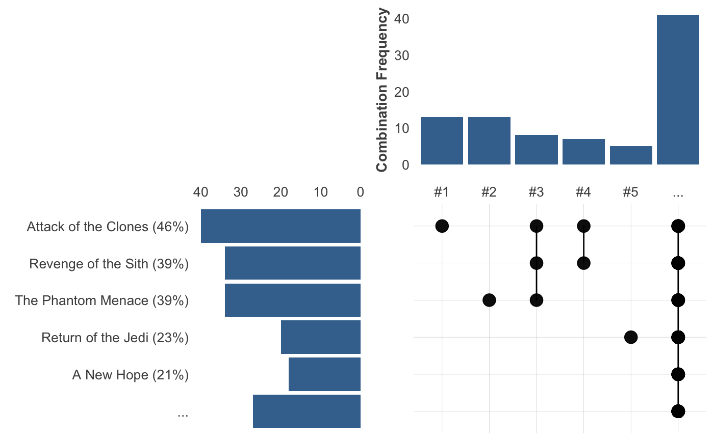
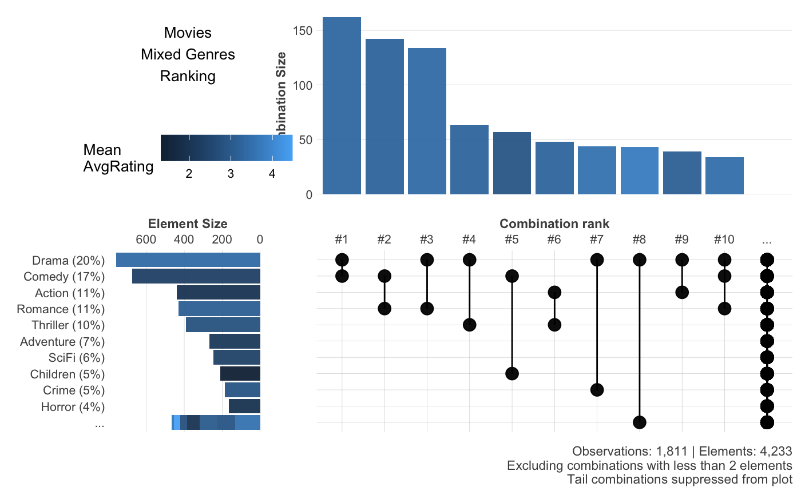

Visualize frequency of elements on a list, list vector, or vector with comma separated values. Detect which combinations and elements are the most frequent and how much they represent of your total observations. This is similar to the UpSet Plots which may be used as an alternative to Venn diagrams.
freqs_list( df, var = NULL, wt = NULL, fx = "mean", rm.na = FALSE, min_elements = 1, limit = 10, limit_x = NA, limit_y = NA, tail = TRUE, size = 10, unique = TRUE, abc = FALSE, title = "", plot = TRUE )
| df | Data.frame |
|---|---|
| var | Variable. Variables you wish to process. |
| wt | Variable, numeric. Select a numeric column to use in the colour scale, used as sum, mean... of those values for each of the combinations. |
| fx | Character. Set operation: mean, sum |
| rm.na | Boolean. Remove NA value from |
| min_elements | Integer. Exclude combinations with less than n elements |
| limit, limit_x, limit_y | Integer. Show top n combinations (x) and/or
elements (y). The rest will be grouped into a single element.
Set argument to 0 to ignore. |
| tail | Boolean. Show tail grouped into "..." on the plots? |
| size | Numeric. Text base size |
| unique | Boolean. a,b = b,a? |
| abc | Boolean. Do you wish to sort by alphabetical order? |
| title | Character. Overwrite plot's title with. |
| plot | Boolean. Plot viz? Will be generated anyways in the output object |
List. data.frame with the data results, elements and combinations.
Other Frequency:
freqs_df(),
freqs_plot(),
freqs()
Other Exploratory:
corr_cross(),
corr_var(),
crosstab(),
df_str(),
distr(),
freqs_df(),
freqs_plot(),
freqs(),
lasso_vars(),
missingness(),
plot_cats(),
plot_df(),
plot_nums(),
tree_var(),
trendsRelated()
Other Visualization:
distr(),
freqs_df(),
freqs_plot(),
freqs(),
gg_bars(),
gg_pie(),
noPlot(),
plot_chord(),
plot_survey(),
plot_timeline(),
theme_lares(),
tree_var()
#> # A tibble: 10 x 4 #> name hair_color skin_color films #> <chr> <chr> <chr> <list> #> 1 Luke Skywalker blond fair <chr [5]> #> 2 C-3PO NA gold <chr [6]> #> 3 R2-D2 NA white, blue <chr [7]> #> 4 Darth Vader none white <chr [4]> #> 5 Leia Organa brown light <chr [5]> #> 6 Owen Lars brown, grey light <chr [3]> #> 7 Beru Whitesun lars brown light <chr [3]> #> 8 R5-D4 NA white, red <chr [1]> #> 9 Biggs Darklighter black light <chr [1]> #> 10 Obi-Wan Kenobi auburn, white fair <chr [6]>#> [[1]] #> [1] "The Empire Strikes Back" "Revenge of the Sith" #> [3] "Return of the Jedi" "A New Hope" #> [5] "The Force Awakens" #> #> [[2]] #> [1] "The Empire Strikes Back" "Attack of the Clones" #> [3] "The Phantom Menace" "Revenge of the Sith" #> [5] "Return of the Jedi" "A New Hope" #>freqs_list(df, films)#> [1] "fair" "gold" "white, blue" "white" "light" #> [6] "light"x <- freqs_list(df, skin_color, min_elements = 2, limit = 5, plot = FALSE) # Inside "x" we'll have: names(x)#> [1] "plot" "data" "elements" "combinations"# Using the 'wt' argument to add a continuous value metric # into an already one-hot encoded columns dataset (and hide tail) csv <- "https://raw.githubusercontent.com/hms-dbmi/UpSetR/master/inst/extdata/movies.csv" movies <- read.csv(csv, sep = ";") head(movies)#> Name ReleaseDate Action Adventure Children #> 1 Toy Story (1995) 1995 0 0 1 #> 2 Jumanji (1995) 1995 0 1 1 #> 3 Grumpier Old Men (1995) 1995 0 0 0 #> 4 Waiting to Exhale (1995) 1995 0 0 0 #> 5 Father of the Bride Part II (1995) 1995 0 0 0 #> 6 Heat (1995) 1995 1 0 0 #> Comedy Crime Documentary Drama Fantasy Noir Horror Musical Mystery Romance #> 1 1 0 0 0 0 0 0 0 0 0 #> 2 0 0 0 0 1 0 0 0 0 0 #> 3 1 0 0 0 0 0 0 0 0 1 #> 4 1 0 0 1 0 0 0 0 0 0 #> 5 1 0 0 0 0 0 0 0 0 0 #> 6 0 1 0 0 0 0 0 0 0 0 #> SciFi Thriller War Western AvgRating Watches #> 1 0 0 0 0 4.15 2077 #> 2 0 0 0 0 3.20 701 #> 3 0 0 0 0 3.02 478 #> 4 0 0 0 0 2.73 170 #> 5 0 0 0 0 3.01 296 #> 6 0 1 0 0 3.88 940freqs_list(movies, wt = AvgRating, min_elements = 2, tail = FALSE, title = "Movies\nMixed Genres\nRanking")#># So, please: no more Comedy+SciFi and more Drama+Horror films (based on ~50 movies)! # }